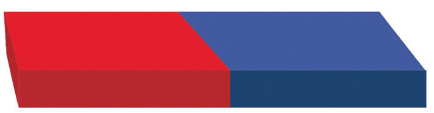

2. Permanent magnets. These retain some magnetism even after the external magnetic field is removed. Such materials include an alloy composed of aluminium, nickel and cobalt (Alnico), or ceramic-like material made from a mixture of iron oxides with nickel, strontium, or cobalt (ferrites) that become magnetised in a magnetic field. These magnets may be naturally occurring “rare earth” elements or chemical compounds. An example of a permanent magnet is the bar magnet shown in Figure 3.5.

Figure 3.5: Bar magnet
Properties of magnets
When you closely examine a bar magnet, you see one end marked N and the other end marked S. Every magnet, regardless of its shape and size, has two poles. N represents a North pole and S represents a South pole as shown in Figure 3.6.
Figure 3.6: Bar magnet showing the N and S poles
These poles are always marked during the process of manufacturing for easy identification. Colouring is also used to mark the poles as shown in Figure 3.6.